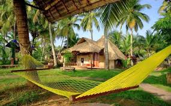

Tourist Resorts (Kerala) Ltd or (TRKL) is a Government of Kerala undertaking[1] under
Kerala Tourism Department, established in August 1989 to promote tourism investment
and to develop Tourism infrastructure in the Indian state of Kerala. TRKL was conceived
to identify tourism infrastructure needs of the state and bridge any identified gaps.
Kerala is today growing at an amazing pace in tourism, adhering to the principles of
indigenousness, environmental sustainability and community participation. Kerala's
beaches, hill stations, backwaters, wildlife sanctuaries, historical monuments, etc.
attract foreign as well as domestic tourists.
The growth in Tourism Industry has also created an infrastructure gap in various tourism
amenities, resulting in a disparity in supply and demand. TRKL is working towards creating
various investment, development and partnership models to address this issue and to catalyse
growth. To broaden its activities TRKL is reconstituted as Kerala Tourism Infrastructure and
Investment Company Ltd[2] by the Government of Kerala.

TRKL was separated from KTDC in 1989, as an independent company. A 1005 government
owned enterprise, the company is managed by Managing Director, who reports to Chairman.
The Government Secretary to Tourism Department, is the ex-officio Chairman of TRKL.
The current Chairman is Dr.Venu IAS and Managing Director is T.K Manzoor. There are
3 nominated directors in the Board of Directors. The Government Secretary of Finance,
Director of Kerala Tourism and Managing Director of KTDC are other members in the board.